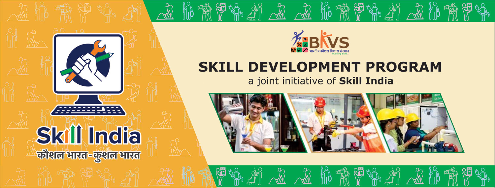

KAUSHAL BHARAT MISSION

The Kaushal Bharat Mission, translated as the "Skilled India Mission," is a flagship initiative of the Government of India. Launched with the vision of creating a skilled and job-ready workforce, it aims to meet the demands of a rapidly evolving economy. The mission was introduced to bridge the existing gap between the demand and supply of skilled labor across diverse industries. Skill development is considered a key driver for economic growth and a means to empower the youth with sustainable livelihoods. Kaushal Bharat Mission strives to impart skills that are aligned with the needs of the industry, fostering a more harmonious relationship between education and employment. The program covers a wide array of sectors, including manufacturing, services, agriculture, healthcare, and more. Through partnerships with industry stakeholders, the mission ensures that the training provided is relevant and up-to-date. Various skill development programs, training centers, and vocational courses are established under the mission to cater to the diverse needs of learners. The initiative recognizes the importance of technology in skill development and encourages the integration of digital tools and platforms. Kaushal Bharat Mission emphasizes inclusivity, targeting not only urban areas but also rural regions to reach a wider population. It promotes entrepreneurship by instilling a spirit of self-reliance and encouraging individuals to start their own businesses. The mission is aligned with other government initiatives, such as Make in India and Digital India, to create a holistic and synergistic approach to development. Special focus is given to empowering women and marginalized communities, ensuring that they have equal opportunities to acquire skills and employment. Kaushal Bharat Mission operates through various schemes, each tailored to address specific skill gaps and industry requirements. Skill training under the mission is often designed with a modular approach, allowing learners to choose from a range of skills based on their interests and aptitudes. Recognition of Prior Learning (RPL) is an integral component, allowing individuals with existing skills to receive formal certification for their expertise. The mission collaborates with industry associations, educational institutions, and international organizations to bring global best practices to the Indian skill development landscape. Assessments and certifications provided under the mission are benchmarked against national and international standards to ensure quality and credibility. Kaushal Bharat Mission encourages the establishment of Centers of Excellence to nurture excellence in specific industries or skill domains. Continuous feedback mechanisms are in place to enhance the effectiveness of training programs and align them with evolving industry requirements. The mission places a strong emphasis on soft skills such as communication, teamwork, and problem-solving, in addition to technical skills. To promote a culture of lifelong learning, the mission supports avenues for continuous skill upgradation and reskilling. Kaushal Bharat Mission leverages the power of public-private partnerships to create a robust ecosystem for skill development. Financial incentives, scholarships, and rewards are provided to motivate individuals to participate actively in skill development programs. The National Skill Development Corporation (NSDC) plays a crucial role in implementing and monitoring the progress of the Kaushal Bharat Mission.view more